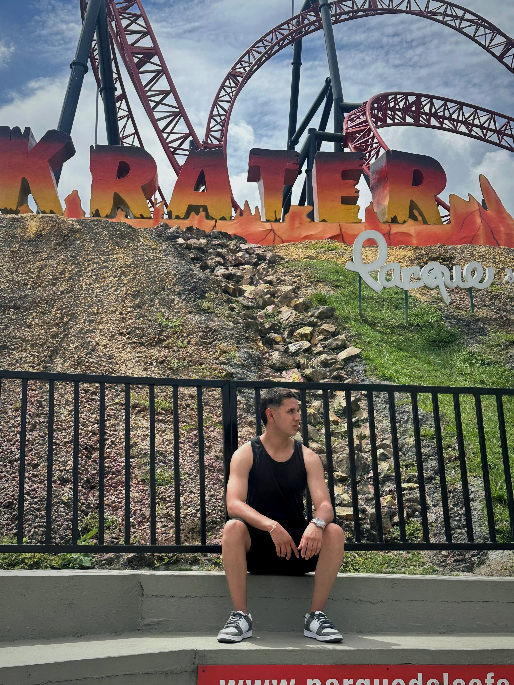
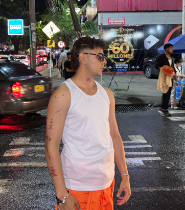

Acerca de mi
21 años
06/08/2004
Soy un desarrollador en formación apasionado por la creación de aplicaciones web modernas y funcionales,
con especial interés en el desarrollo frontend y backend, combinando diseño y lógica para construir
experiencias atractivas.
Actualmente estudio Ingeniería de Sistemas en la Universidad del Cauca,
donde he adquirido una sólida base en programación, algoritmos y estructuras de datos.
Mi objetivo es seguir creciendo como desarrollador, explorando nuevas tecnologías
y contribuyendo a proyectos con impacto positivo en la sociedad.

